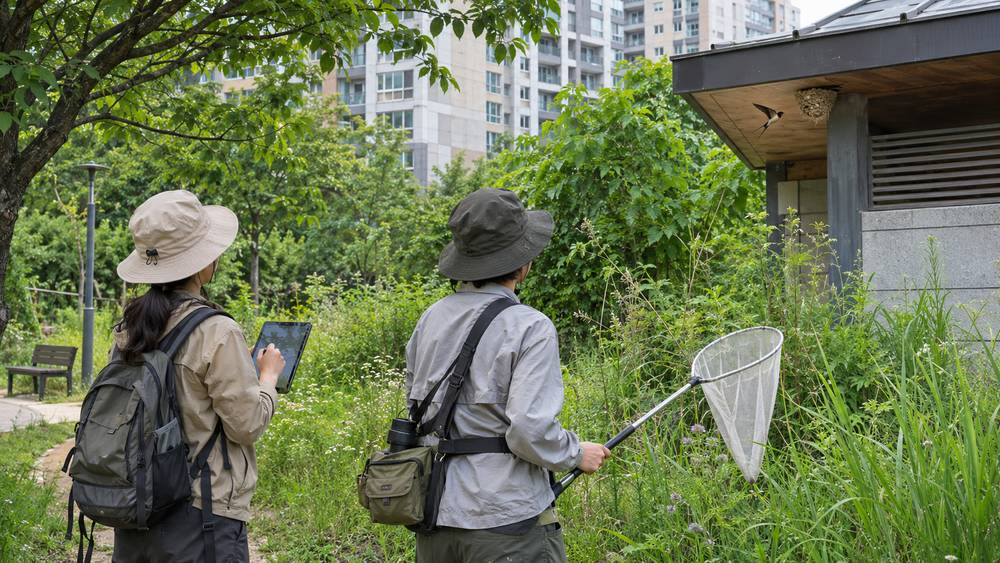
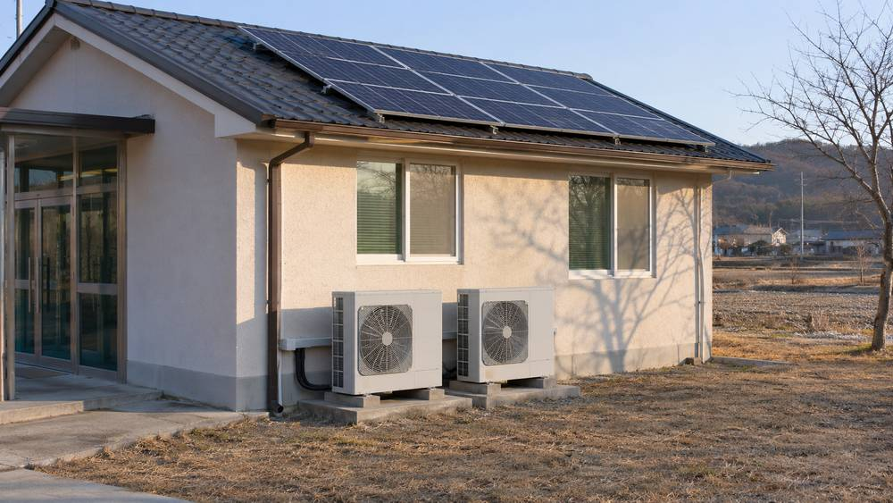

사회
기후변화 시나리오 첫 산출, 세기 말 1.2~3.6℃ 상승
기상청이 IPCC 7차 보고서용 전지구 시나리오 2종을 냈다. 동아시아는 고배출 때 최대 4.1℃ 오르고, 한반도 표준 시나리오는 2030년에 나온다.

생물기후 연구인력 30명, 러브버그 취약지역 찾았다
국립생물자원관이 올해 처음 키운 연구자 30명이 11월 20일 성과를 낸다. 서울 러브버그 민원 2만4,000건과 제비 관측 1만 건을 분석했다.

사회연대경제박람회 27일 킨텍스, 기본법 뒤 첫 전국 행사
11월 27~29일 고양 킨텍스에서 열리고 관람은 무료다. 사전등록은 11월 26일까지, 첫날엔 한국사회연대금융협회 창립총회도 열린다.

사회복지시설 히트펌프·태양광, 설치비 80% 지원
도시가스 없는 지역 민간 복지시설이 대상이다. 한국에너지공단이 11월 23~27일 신청을 받고, 예산 2억8,060만 원에 시설당 한도는 3,480만 원이다.

도시가스요금 경감, 실거주지 신청 길 열고 한도 1년 연장
산업통상부 개정안대로면 수급자·차상위계층은 12월 11일부터 실제 사는 집으로도 신청한다. 겨울 월 최대 14만8,000원 한도는 2027년 11월까지 간다.

하수처리장 방류수 질소를 하루 전에 예측해 전력비 10% 절감 기대…부산 강변하수처리장 등 수질원격감시 우수사례 4곳
기후부·한국환경공단 선정, 4곳 중 3곳이 인공지능 예측 모형 / 광주 평동3차 공공폐수처리시설은 약품 61% 덜 써 누적 1억2,000만 원 절감 기대

재활용 골재로 농지·산지 성토 금지, 폐기물관리법 개정안
김태선 의원 등 11명이 낸 법안으로, 어기면 7년 이하 징역이나 7,000만 원 이하 벌금이고 사용 전 시·도지사나 시장·군수·구청장에게 보고해야 한다. 11월 22일까지 입법예고.

상주 규모 3.6 지진, 54km 떨어진 연구용 원자로 계측값 0.0010g…원전 중엔 한빛이 0.0031g로 가장 커
원안위 "내진설계값 0.2g보다 낮고 현장 점검도 이상 없어" / 진앙 반경 30km, 1978년 이후 규모 2.0 이상 52번·1978년엔 규모 5.2

협동조합·사회적기업이 함께 쓰는 '혁신허브' 6곳…청도는 옛 보건소, 칠곡은 공공구매 연결
행안부, 고양·안성·청도·칠곡·부여·홍성 선정…민관협의체가 운영 모형 짠다 / 「사회연대경제기본법」 2027년 3월 16일 시행 앞둬

송전선로 지원금 3분의 2 이내 주변 지역에 배분…주민설명회 2회에서 3회로
기후에너지환경부, 12월 1일까지 입법·행정예고…주민이 낸 대안 경과지도 입지선정위원회 심의 대상

사회적기업 국제포럼에 주민 운영 마을 태양광 사례 올라, 국내외 8개 사례 중 태양광은 하나
고용노동부와 한국사회적기업진흥원이 11월 10일(화) 서울에서 연 포럼, 사회적기업육성법 시행 19년 맞아 돌봄·주거·에너지 경험 공유